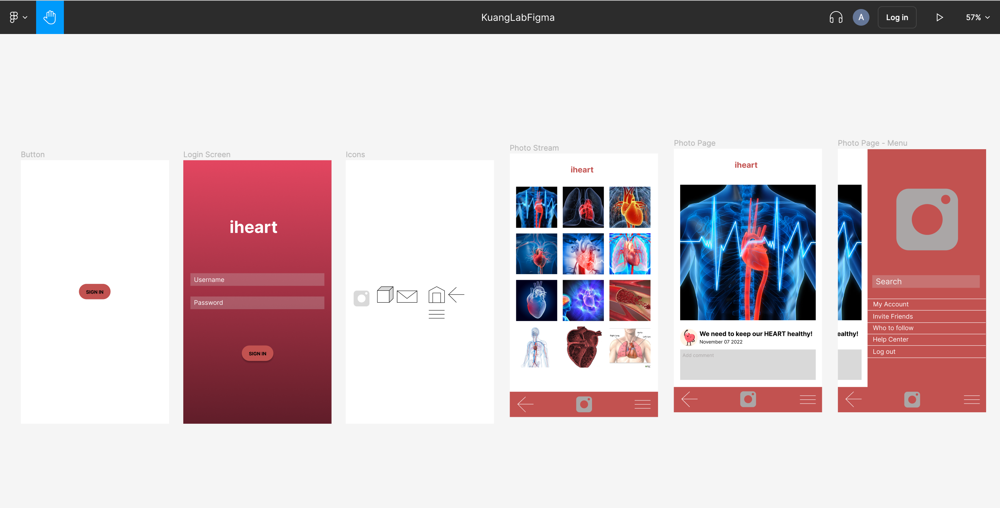

This project allowed me to interact with animals that I consume which made me realize that I should eat less of. This allowed me to go to restaurants and talk about the importance of using and know where the ingredients you use come from. I personally consume meat myself and a lit of foods I eat have meat, but learning about where the food I eat comes from is really important.

This is another project I worked on which is talking about heart. A reason why I worked on this was because the heart is affected by everything you eat. I personally have some relatives that get heart related diseases because of their diet. This makes me be more aware of what I eat in my everyday life.